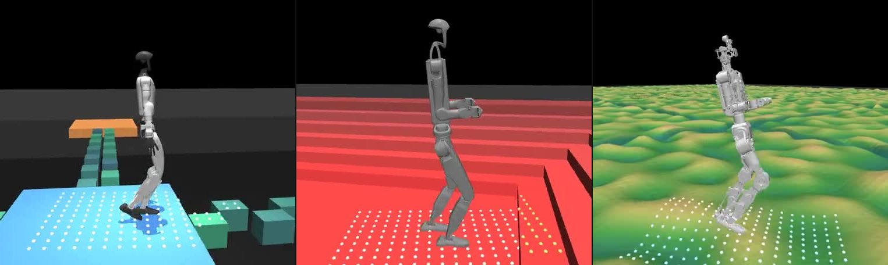

Pretraining Foundation Policies for Perceptive Humanoid Locomotion with Offline RL Under review
SOFIE learns perceptive humanoid locomotion entirely offline, from rollouts of experts of mixed quality. It scores whole footsteps by their advantage and imitates the better ones more, so one policy walks three humanoids over stepping stones, stairs and rough ground where behavior cloning copies the mistakes. Fine-tuned on a small dataset from an unseen humanoid, a policy pretrained with SOFIE also beats training from scratch.
Project page →